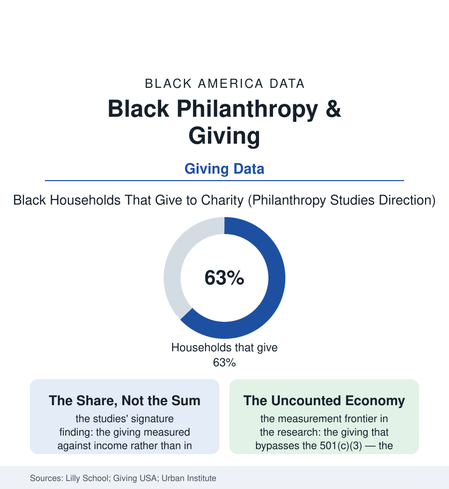

Black Census
The Collection Plate Economy: Black Giving in the Data
Measured as a share of income, Black households are among the most generous in America — a giving tradition the philanthropy industry is only now learning to count, because most of it never passes through a foundation. The giving file.

American philanthropy publishes its totals in the hundreds of billions, sorted by foundation and donor-advised fund. The giving of Black America runs on older rails — the collection plate, the benefit concert, the envelope for the family back home, the auntie's tuition wire — and measured the way sacrifice is measured, as a share of what the household has, it stands among the most generous in the nation. This article reads the giving file. The pattern deserves its own ledger.
The Tithe and the Tradition
The studies' central finding has been replicated across the decades of the philanthropy literature with unusual consistency: Black households give at rates comparable to the nation's in participation and ahead of it in proportion — the share-of-income measures (the tithe's arithmetic generalized) placing Black giving at the top of the tables in study after study, the tradition's infrastructure visible in every other file of this book: the church of the faith file as the first collection (the offering's discipline a weekly practice in proportional giving no development office has matched), the mutual-aid societies of the business file's ancestry (the burial societies and the benevolent orders — philanthropy's Black American original form, the insurance file's twin), the Greek organizations' scholarship funds, the giving circles of the modern data (the pooled-fund collectives — disproportionately Black women's — multiplying in the philanthropy research's fastest-growing category), and the remittance-and-support flows inside the family file that no dataset totals: the graduate's salary supporting the household that raised her, the 'Black tax' of the interview literature — accounted as burden in the wealth file and as giving in this one, the same dollars wearing both truths. The formal system's late recognition is itself documented: the community foundations' Black-giving initiatives, the August observance the sector now keeps as Black Philanthropy Month, the donor research discovering — in the 2020s' successive studies, with an air of surprise the community finds familiar — that the population gives, has always given, and distrusts principally the intermediaries.
Where the Money Goes and What It Builds
The destination data distinguish the tradition from the industry's: the Black dollar's philanthropic map running to the church first (the faith institutions' share of Black giving dwarfing the national pattern), then to the family-and-neighborhood tier the tax code does not reach, then to education — the HBCU alumni giving of the education file, the scholarship funds as the community's signature formal instrument, the alma mater's claim honored at rates the advancement offices of wealthier schools envy — and only then to the national charities whose brands dominate the industry's advertising. The wealth file's new chapters add the summit's rows: the Black mega-donors of the recent record (the nine-figure gifts to the HBCUs that rewrote those schools' endowment tables in a single cycle — the largest philanthropic story in the education file's modern history), the donor-advised funds' diversification, the family foundations of the business file's second generations. The critiques ride inside the tradition as they should: the prosperity file's televangelist ledgers, the crowdfunding era's fraud rows, the church building fund's eternal construction — the community auditing its own giving in its own vernacular long before the sector's journals arrive. What the file finally measures is a definition dispute with money attached: philanthropy, in the industry's Greek, is the love of humanity at foundation scale. In the data of this population it is something older and more ordinary — the plate passed hand to hand, the rent paid for the cousin, the scholarship in the church bulletin — a civilization's operating system for its own survival, itemized by the researchers at last, and found, as a share of everything the givers had, to be among the most generous ledgers in the republic.
Reading the Giving Data
The giving file is the census section's collection plate: the population the wealth tables rank last in assets ranking first in the proportion it gives away. Giving USA publishes the billions. The plate — passed on Sunday, in the rows the affiliation file counts — publishes the ratio, and the ratio is the story. It always has been, in this file's long accounting of who actually shows up.
More in Black Census
The Black Population of the United States: Size, Definitions, and Distribution
The Black population of the United States totals 52.8 million — 15.4 percent of the nation. How the Census Bureau defines and counts the population, and where it lives.
Black Median Household Income in the United States
Black median household income stands at $56,490 in the Census Bureau's annual income report — how the figure is measured, how it compares, and what drives it.
The Black Poverty Rate: Levels, Children, and the Long Trend
The official Black poverty rate is 17.1 percent — against 11.1 percent nationally and 7.7 percent for non-Hispanic White Americans. How poverty is measured and what the data show.
Source: Indiana University Lilly Family School of Philanthropy and Giving USA research; U.S. Census Bureau and Bureau of Labor Statistics giving data; W.K. Kellogg Foundation and Urban Institute philanthropy studies.